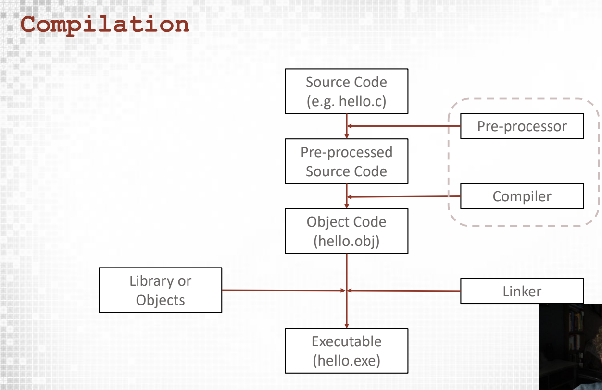

3 Basics
4 C Basics
4.1 The Structure of a C Program
Let’s start with a simple “Hello, World!” program:
#include <stdio.h>
int main() {
printf("Hello, World!\n");
return 0;
}Let’s break this down:
#include <stdio.h> - This is a preprocessor directive that includes the standard input/output library.
int main() - The main function, which is the entry point of every C program.
printf("Hello, World!\n"); - A function call that prints text to the console.
return 0; - Returns 0 to the operating system, indicating successful execution.
{ } - Curly braces define code blocks.
Comments in C:
C supports two types of comments:
// This is a single-line comment
/* This is a multi-line comment
that spans across several lines */Comments are ignored by the compiler and are used to explain your code.
Preprocessor Directives:
Preprocessor directives start with # and are processed before compilation:
#include <stdio.h> // Include a header file
#define PI 3.14159 // Define a constantCommon preprocessor directives:
#include- Includes a header file
#define- Defines a constant or macro
`#ifdef, #ifndef, #endif - Conditional compilation
Compilation Process:
The C compilation process involves four stages:
Preprocessing: Processes directives like #include and #define
Compilation: Converts source code to assembly code
Assembly: Converts assembly code to object code
Linking: Combines object files and libraries into an executable

Let’s revisit our “Hello World” program:
#include <stdio.h>
int main() {
printf("Hello, World!\n");
return 0;
}printf() is a function from the standard library that outputs formatted text
\n is an escape sequence representing a newline character
The semicolon ; ends each statement
Exercise: Writing our First C Program
Steps:
Create a file named greeting.c
Write a program that prints “Hello, [your name]!”
Compile and run the program
Solution:
#include <stdio.h>
int main() {
printf("Hello, [your name]!\n");
return 0;
}Compile and run:
#macOS
gcc greeting.c -o greeting
./greeting4.2 Variables and Data Types
4.2.1 Basic Data Types
C provides several fundamental data types:
| Type | Description | Format Specifier | Example |
|---|---|---|---|
int |
Integer | %d or %i |
int age = 25; |
float |
Single-precision floating-point | %f |
float price = 19.99f; |
double |
Double-precision floating-point | %lf |
double pi = 3.14159265359; |
char |
Single character | %c |
char grade = 'A'; |
4.2.2 Variable Declaration and Initialization
Variables must be declared before use:
// Declaration only
int count;
// Declaration with initialization
int count = 0;
// Multiple variables of the same type
int x, y, z;
int a = 1, b = 2, c = 3;4.2.3 Type Modifiers
Type modifiers alter the range or behavior of basic types:
| Modifier | Description | Example |
|---|---|---|
short |
Reduced-size integer | short int num = 123; |
long |
Extended-size integer | long int population = 7800000000L; |
unsigned |
Non-negative values only | unsigned int count = 50; |
signed |
Positive and negative values (default) | signed int temperature = -10; |
4.2.4 Constants
Constants are values that cannot be modified after declaration:
// Using const qualifier
const float PI = 3.14159;
// Using #define preprocessor directive
#define MAX_SIZE 1004.3 Type Conversion
C supports two types of type conversion:
Implicit conversion (automatic):
int x = 10; double y = x; // int implicitly converted to doubleExplicit conversion (casting):
double x = 10.5; int y = (int)x; // x is explicitly cast to int, y = 10
4.4 Variable Scope
The scope of a variable determines where it can be accessed:
- Local variables - Declared inside a function and accessible only within that function
- Global variables - Declared outside any function and accessible throughout the program
- Block-level variables - Declared inside a block and accessible only within that block
#include <stdio.h>
// Global variable
int globalVar = 100;
int main() {
// Local variable
int localVar = 50;
{
// Block-level variable
int blockVar = 25;
printf("Block variable: %d\n", blockVar);
}
// blockVar is not accessible here
printf("Global variable: %d\n", globalVar);
printf("Local variable: %d\n", localVar);
return 0;
}4.5 Memory Size and Range
The sizeof() operator returns the memory size (in bytes) of a data type or variable:
#include <stdio.h>
#include <limits.h> // For integer limits
#include <float.h> // For floating-point limits
int main() {
printf("Size of int: %zu bytes\n", sizeof(int));
printf("Range of int: %d to %d\n", INT_MIN, INT_MAX);
printf("Size of float: %zu bytes\n", sizeof(float));
printf("Range of float: %e to %e\n", FLT_MIN, FLT_MAX);
return 0;
}Output:
vaibhav@Mac src % gcc memory_size.c -o out
vaibhav@Mac src % ./out
Size of int: 4 bytes
Range of int: -2147483648 to 2147483647
Size of float: 4 bytes
Range of float: 1.175494e-38 to 3.402823e+384.6 Exercise: Working with Variables
Write a program that:
- Declares variables for a person’s name, age, and height
- Initializes them with values
- Prints them in a formatted way
Solution:
#include <stdio.h>
int main() {
// Declare and initialize variables
char name[50] = "John Doe";
int age = 30;
float height = 175.5; // in cm
// Print the values
printf("Name: %s\n", name);
printf("Age: %d years\n", age);
printf("Height: %.1f cm\n", height);
return 0;
}4.7 Operators in C
4.8 Arithmetic Operators
| Operator | Description | Example |
|---|---|---|
+ |
Addition | a + b |
- |
Subtraction | a - b |
* |
Multiplication | a * b |
/ |
Division | a / b |
% |
Modulus (remainder) | a % b |
++ |
Increment | a++ or ++a |
-- |
Decrement | a-- or --a |
4.8.1 Example:
#include <stdio.h>
int main() {
int a = 10, b = 3;
printf("a + b = %d\n", a + b); // 13
printf("a - b = %d\n", a - b); // 7
printf("a * b = %d\n", a * b); // 30
printf("a / b = %d\n", a / b); // 3 (integer division)
printf("a %% b = %d\n", a % b); // 1 (remainder)
int c = a++; // c = 10, then a becomes 11
int d = ++b; // b becomes 4, then d = 4
printf("After a++: a = %d, c = %d\n", a, c);
printf("After ++b: b = %d, d = %d\n", b, d);
return 0;
}
/*
https://www.programiz.com/c-programming/online-compiler/
Output:
a + b = 13
a - b = 7
a * b = 30
a / b = 3
a % b = 1
After a++: a = 11, c = 10
After ++b: b = 4, d = 4
=== Code Execution Successful ===
*/4.9 Assignment Operators
| Operator | Description | Equivalent to |
|---|---|---|
= |
Simple assignment | a = b |
+= |
Add and assign | a = a + b |
-= |
Subtract and assign | a = a - b |
*= |
Multiply and assign | a = a * b |
/= |
Divide and assign | a = a / b |
%= |
Modulus and assign | a = a % b |
4.9.1 Example:
#include <stdio.h>
int main() {
int x = 10;
x += 5; // x = x + 5
printf("After x += 5: x = %d\n", x); // 15
x -= 3; // x = x - 3
printf("After x -= 3: x = %d\n", x); // 12
x *= 2; // x = x * 2
printf("After x *= 2: x = %d\n", x); // 24
x /= 4; // x = x / 4
printf("After x /= 4: x = %d\n", x); // 6
x %= 4; // x = x % 4
printf("After x %%= 4: x = %d\n", x); // 2
return 0;
}4.10 Comparison Operators
| Operator | Description | Example |
|---|---|---|
== |
Equal to | a == b |
!= |
Not equal to | a != b |
> |
Greater than | a > b |
< |
Less than | a < b |
>= |
Greater than or equal to | a >= b |
<= |
Less than or equal to | a <= b |
4.10.1 Example:
#include <stdio.h>
int main() {
int a = 10, b = 20;
printf("a == b: %d\n", a == b); // 0 (false)
printf("a != b: %d\n", a != b); // 1 (true)
printf("a > b: %d\n", a > b); // 0 (false)
printf("a < b: %d\n", a < b); // 1 (true)
printf("a >= b: %d\n", a >= b); // 0 (false)
printf("a <= b: %d\n", a <= b); // 1 (true)
return 0;
}4.11 Logical Operators
| Operator | Description | Example |
|---|---|---|
&& |
Logical AND | a && b |
\| |
Logical OR | a \| b |
! |
Logical NOT | !a |
4.11.1 Example:
#include <stdio.h>
int main() {
int a = 1, b = 0; // 1 is true, 0 is false in C
printf("a && b: %d\n", a && b); // 0 (false)
printf("a || b: %d\n", a || b); // 1 (true)
printf("!a: %d\n", !a); // 0 (false)
printf("!b: %d\n", !b); // 1 (true)
return 0;
}4.12 Bitwise Operators
| Operator | Description | Example |
|---|---|---|
& |
Bitwise AND | a & b |
\| |
Bitwise OR | a \| b |
^ |
Bitwise XOR | a ^ b |
~ |
Bitwise NOT | ~a |
<< |
Left shift | a << n |
>> |
Right shift | a >> n |
4.12.1 Example:
#include <stdio.h>
int main() {
unsigned int a = 60; // 00111100 in binary
unsigned int b = 13; // 00001101 in binary
printf("a & b = %u\n", a & b); // 12 (00001100)
printf("a | b = %u\n", a | b); // 61 (00111101)
printf("a ^ b = %u\n", a ^ b); // 49 (00110001)
printf("~a = %u\n", ~a); // 4294967235 (11...00011)
printf("a << 2 = %u\n", a << 2); // 240 (11110000)
printf("a >> 2 = %u\n", a >> 2); // 15 (00001111)
return 0;
}4.13 Miscellaneous Operators
| Operator | Description | Example |
|---|---|---|
sizeof |
Size of variable/type | sizeof(a) |
& |
Address of variable | &a |
* |
Pointer to variable | *a |
?: |
Conditional operator | a ? b : c |
4.13.1 Example:
#include <stdio.h>
int main() {
int a = 10;
int *ptr = &a; // ptr holds the address of a
printf("Size of int: %zu bytes\n", sizeof(int));
printf("Address of a: %p\n", &a);
printf("Value at address stored in ptr: %d\n", *ptr);
// Conditional operator
int max = (a > 20) ? a : 20;
printf("Max of a and 20: %d\n", max);
return 0;
}4.14 Operator Precedence
Operators have different precedence levels that determine the order of evaluation:
- Postfix
++--()[].-> - Prefix
++--+-!~(type)*&sizeof - Multiplicative
*/% - Additive
+- - Shift
<<>> - Relational
<<=>>= - Equality
==!= - Bitwise AND
& - Bitwise XOR
^ - Bitwise OR
| - Logical AND
&& - Logical OR
|| - Conditional
?: - Assignment
=+=-=*=/=%=etc.
When in doubt, use parentheses to explicitly specify the order of operations.
4.15 Exercise: Temperature Converter
Write a program that converts temperature from Fahrenheit to Celsius and vice versa.
Solution:
#include <stdio.h>
int main() {
float fahrenheit, celsius;
// Fahrenheit to Celsius
printf("Enter temperature in Fahrenheit: ");
scanf("%f", &fahrenheit);
celsius = (fahrenheit - 32) * 5 / 9;
printf("%.2f°F = %.2f°C\n", fahrenheit, celsius);
// Celsius to Fahrenheit
printf("\nEnter temperature in Celsius: ");
scanf("%f", &celsius);
fahrenheit = (celsius * 9 / 5) + 32;
printf("%.2f°C = %.2f°F\n", celsius, fahrenheit);
return 0;
}4.16 Control Structures
Control structures allow you to control the flow of execution in your program based on conditions or to repeat a block of code.
4.17 Conditional Statements
4.17.1 if Statement
The if statement executes a block of code if a specified condition is true:
if (condition) {
// Code to execute if condition is true
}Example:
#include <stdio.h>
int main() {
int age = 20;
if (age >= 18) {
printf("You are an adult.\n");
}
return 0;
}4.17.2 if-else Statement
The if-else statement executes one block if the condition is true and another if it’s false:
if (condition) {
// Code to execute if condition is true
} else {
// Code to execute if condition is false
}Example:
#include <stdio.h>
int main() {
int age = 15;
if (age >= 18) {
printf("You are an adult.\n");
} else {
printf("You are a minor.\n");
}
return 0;
}4.17.3 if-else if-else Statement
You can check multiple conditions using if-else if-else:
if (condition1) {
// Code to execute if condition1 is true
} else if (condition2) {
// Code to execute if condition1 is false and condition2 is true
} else {
// Code to execute if all conditions are false
}Example:
#include <stdio.h>
int main() {
int score = 85;
if (score >= 90) {
printf("Grade: A\n");
} else if (score >= 80) {
printf("Grade: B\n");
} else if (score >= 70) {
printf("Grade: C\n");
} else if (score >= 60) {
printf("Grade: D\n");
} else {
printf("Grade: F\n");
}
return 0;
}4.17.4 Nested if Statements
You can place if statements inside other if or else blocks:
if (condition1) {
if (condition2) {
// Code to execute if both conditions are true
}
}Example:
#include <stdio.h>
int main() {
int age = 25;
char hasLicense = 'Y';
if (age >= 18) {
if (hasLicense == 'Y') {
printf("You can drive.\n");
} else {
printf("You need a license to drive.\n");
}
} else {
printf("You are too young to drive.\n");
}
return 0;
}4.17.5 Conditional (Ternary) Operator
The conditional operator is a shorthand for simple if-else statements:
result = (condition) ? value_if_true : value_if_false;Example:
#include <stdio.h>
int main() {
int age = 20;
char *status = (age >= 18) ? "adult" : "minor";
printf("You are a %s.\n", status);
return 0;
}4.17.6 switch Statement
The switch statement selects one of many code blocks to execute:
switch (expression) {
case value1:
// Code to execute if expression equals value1
break;
case value2:
// Code to execute if expression equals value2
break;
default:
// Code to execute if expression doesn't match any case
}Example:
#include <stdio.h>
int main() {
int day = 3;
switch (day) {
case 1:
printf("Monday\n");
break;
case 2:
printf("Tuesday\n");
break;
case 3:
printf("Wednesday\n");
break;
case 4:
printf("Thursday\n");
break;
case 5:
printf("Friday\n");
break;
case 6:
printf("Saturday\n");
break;
case 7:
printf("Sunday\n");
break;
default:
printf("Invalid day\n");
}
return 0;
}4.18 Loops
4.18.1 while Loop
The while loop executes a block of code as long as a specified condition is true:
while (condition) {
// Code to execute while condition is true
}Example:
#include <stdio.h>
int main() {
int i = 1;
while (i <= 5) {
printf("%d ", i);
i++;
}
// Output: 1 2 3 4 5
return 0;
}4.18.2 do-while Loop
The do-while loop is similar to the while loop, but it executes the code block once before checking the condition:
do {
// Code to execute at least once
} while (condition);Example:
#include <stdio.h>
int main() {
int i = 1;
do {
printf("%d ", i);
i++;
} while (i <= 5);
// Output: 1 2 3 4 5
return 0;
}4.18.3 for Loop
The for loop provides a concise way to write the loop structure:
for (initialization; condition; increment/decrement) {
// Code to execute while condition is true
}Example:
#include <stdio.h>
int main() {
for (int i = 1; i <= 5; i++) {
printf("%d ", i);
}
// Output: 1 2 3 4 5
return 0;
}4.18.4 Nested Loops
You can place loops inside other loops:
for (int i = 1; i <= 3; i++) {
for (int j = 1; j <= 3; j++) {
// Code to execute
}
}Example:
#include <stdio.h>
int main() {
for (int i = 1; i <= 3; i++) {
for (int j = 1; j <= 3; j++) {
printf("(%d,%d) ", i, j);
}
printf("\n");
}
return 0;
}Output:
(1,1) (1,2) (1,3)
(2,1) (2,2) (2,3)
(3,1) (3,2) (3,3) 4.19 Jump Statements
4.19.1 break Statement
The break statement terminates the innermost enclosing loop or switch statement:
#include <stdio.h>
int main() {
for (int i = 1; i <= 10; i++) {
if (i == 6) {
break; // Exit the loop when i equals 6
}
printf("%d ", i);
}
// Output: 1 2 3 4 5
return 0;4.20 Functions
A function provides a convenient way to encapsulate some computation, which can then be used without worrying about its implementation. With properly designed functions, it is possible to ignore how a job is done; knowing what is done is sufficient. C makes the sue of functions easy, convinient and efficient; you will often see a short function defined and called only once, just because it clarifies some piece of code. ![src]
A function definition has this form:
return-type function-name(parameter declarations, if any)
{
declarations
statements
}Rewrite function to calculate temperature
#include <stdio.h>
// Function declaration (prototype)
int convert_temperature(float fahr);
int main() {
int result = convert_temperature(5.0);
printf("celsius: %d\n", result);
return 0;
}
// Function definition
int convert_temperature(float fahr) {
float celsius = 5*(fahr-32)/9;
return celsius;
}If you notice in above example there’s something known as function declaration. This declaration, which is called a function prototype, has to agree with the definition and uses of power. It is an error if the definition of a function or any uses of it do not agree with its prototype. parameter names need not agree. Indeed, parameter names are optional in a function prototype, so for the prototype we could have written
int convert_temperature(float);Further Reading: